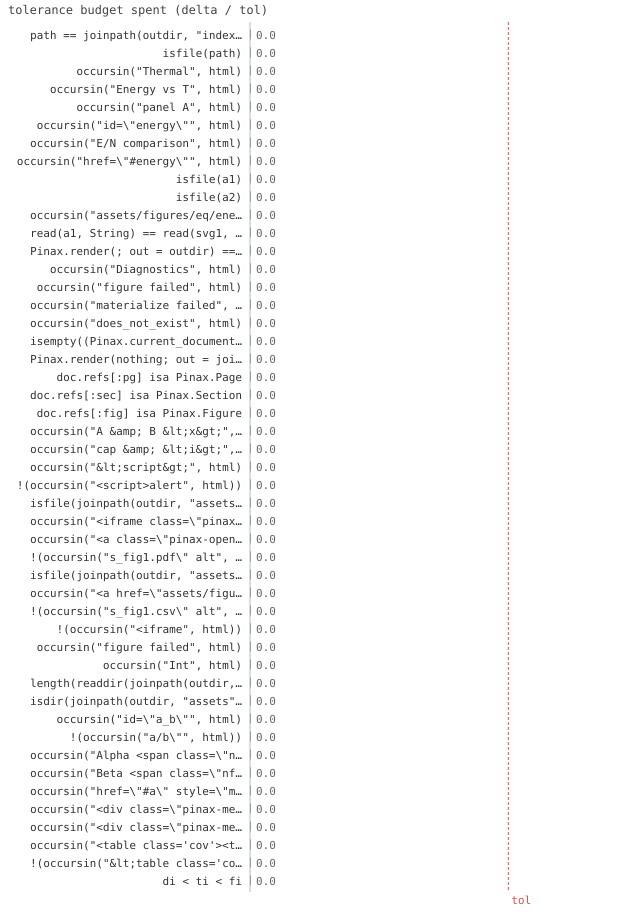

48/48 passed · 0.59s
| id | label | got | want | Δ vs tol (kind) | |
|---|---|---|---|---|---|
| ✓ | t585 | path == joinpath(outdir, "index.html") | 1.0 | 1.0 | 0.0 vs 0.5 (abs) |
| ✓ | t586 | isfile(path) | 1.0 | 1.0 | 0.0 vs 0.5 (abs) |
| ✓ | t587 | occursin("Thermal", html) | 1.0 | 1.0 | 0.0 vs 0.5 (abs) |
| ✓ | t588 | occursin("Energy vs T", html) | 1.0 | 1.0 | 0.0 vs 0.5 (abs) |
| ✓ | t589 | occursin("panel A", html) | 1.0 | 1.0 | 0.0 vs 0.5 (abs) |
| ✓ | t590 | occursin("id=\"energy\"", html) | 1.0 | 1.0 | 0.0 vs 0.5 (abs) |
| ✓ | t591 | occursin("E/N comparison", html) | 1.0 | 1.0 | 0.0 vs 0.5 (abs) |
| ✓ | t592 | occursin("href=\"#energy\"", html) | 1.0 | 1.0 | 0.0 vs 0.5 (abs) |
| ✓ | t593 | isfile(a1) | 1.0 | 1.0 | 0.0 vs 0.5 (abs) |
| ✓ | t594 | isfile(a2) | 1.0 | 1.0 | 0.0 vs 0.5 (abs) |
| ✓ | t595 | occursin("assets/figures/eq/energy/energy_fig1.svg", html) | 1.0 | 1.0 | 0.0 vs 0.5 (abs) |
| ✓ | t596 | read(a1, String) == read(svg1, String) | 1.0 | 1.0 | 0.0 vs 0.5 (abs) |
| ✓ | t597 | Pinax.render(; out = outdir) == path | 1.0 | 1.0 | 0.0 vs 0.5 (abs) |
| ✓ | t598 | occursin("Diagnostics", html) | 1.0 | 1.0 | 0.0 vs 0.5 (abs) |
| ✓ | t599 | occursin("figure failed", html) | 1.0 | 1.0 | 0.0 vs 0.5 (abs) |
| ✓ | t600 | occursin("materialize failed", html) | 1.0 | 1.0 | 0.0 vs 0.5 (abs) |
| ✓ | t601 | occursin("does_not_exist", html) | 1.0 | 1.0 | 0.0 vs 0.5 (abs) |
| ✓ | t602 | isempty((Pinax.current_document()).diag.entries) | 1.0 | 1.0 | 0.0 vs 0.5 (abs) |
| ✓ | t603 | Pinax.render(nothing; out = joinpath(tmp, "x")) | 1.0 | 1.0 | 0.0 vs 0.5 (abs) |
| ✓ | t604 | doc.refs[:pg] isa Pinax.Page | 1.0 | 1.0 | 0.0 vs 0.5 (abs) |
| ✓ | t605 | doc.refs[:sec] isa Pinax.Section | 1.0 | 1.0 | 0.0 vs 0.5 (abs) |
| ✓ | t606 | doc.refs[:fig] isa Pinax.Figure | 1.0 | 1.0 | 0.0 vs 0.5 (abs) |
| ✓ | t607 | occursin("A & B <x>", html) | 1.0 | 1.0 | 0.0 vs 0.5 (abs) |
| ✓ | t608 | occursin("cap & <i>", html) | 1.0 | 1.0 | 0.0 vs 0.5 (abs) |
| ✓ | t609 | occursin("<script>", html) | 1.0 | 1.0 | 0.0 vs 0.5 (abs) |
| ✓ | t610 | !(occursin("<script>alert", html)) | 1.0 | 1.0 | 0.0 vs 0.5 (abs) |
| ✓ | t611 | isfile(joinpath(outdir, "assets", "figures", "p", "s", "s_fig1.pdf")) | 1.0 | 1.0 | 0.0 vs 0.5 (abs) |
| ✓ | t612 | occursin("<iframe class=\"pinax-pdf\" src=\"assets/figures/p/s/s_fig1.pdf\"", html) | 1.0 | 1.0 | 0.0 vs 0.5 (abs) |
| ✓ | t613 | occursin("<a class=\"pinax-open\" href=\"assets/figures/p/s/s_fig1.pdf\"", html) | 1.0 | 1.0 | 0.0 vs 0.5 (abs) |
| ✓ | t614 | !(occursin("s_fig1.pdf\" alt", html)) | 1.0 | 1.0 | 0.0 vs 0.5 (abs) |
| ✓ | t615 | isfile(joinpath(outdir, "assets", "figures", "p", "s", "s_fig1.csv")) | 1.0 | 1.0 | 0.0 vs 0.5 (abs) |
| ✓ | t616 | occursin("<a href=\"assets/figures/p/s/s_fig1.csv\"", html) | 1.0 | 1.0 | 0.0 vs 0.5 (abs) |
| ✓ | t617 | !(occursin("s_fig1.csv\" alt", html)) | 1.0 | 1.0 | 0.0 vs 0.5 (abs) |
| ✓ | t618 | !(occursin("<iframe", html)) | 1.0 | 1.0 | 0.0 vs 0.5 (abs) |
| ✓ | t619 | occursin("figure failed", html) | 1.0 | 1.0 | 0.0 vs 0.5 (abs) |
| ✓ | t620 | occursin("Int", html) | 1.0 | 1.0 | 0.0 vs 0.5 (abs) |
| ✓ | t621 | length(readdir(joinpath(outdir, "assets", "figures", "p", "s"))) == 2 | 1.0 | 1.0 | 0.0 vs 0.5 (abs) |
| ✓ | t622 | isdir(joinpath(outdir, "assets", "figures", "a_b", "s")) | 1.0 | 1.0 | 0.0 vs 0.5 (abs) |
| ✓ | t623 | occursin("id=\"a_b\"", html) | 1.0 | 1.0 | 0.0 vs 0.5 (abs) |
| ✓ | t624 | !(occursin("a/b\"", html)) | 1.0 | 1.0 | 0.0 vs 0.5 (abs) |
| ✓ | t625 | occursin("Alpha <span class=\"nfig\">(2)</span>", html) | 1.0 | 1.0 | 0.0 vs 0.5 (abs) |
| ✓ | t626 | occursin("Beta <span class=\"nfig\">(1)</span>", html) | 1.0 | 1.0 | 0.0 vs 0.5 (abs) |
| ✓ | t627 | occursin("href=\"#a\" style=\"margin-left:1.2rem\">Alpha <span class=\"nfig\">(2)</span>", html) | 1.0 | 1.0 | 0.0 vs 0.5 (abs) |
| ✓ | t628 | occursin("<div class=\"pinax-meta\">3 figures</div>", html) | 1.0 | 1.0 | 0.0 vs 0.5 (abs) |
| ✓ | t629 | occursin("<div class=\"pinax-meta\">1 figure</div>", html) | 1.0 | 1.0 | 0.0 vs 0.5 (abs) |
| ✓ | t630 | occursin("<table class='cov'><tr><td>24</td></tr></table>", html) | 1.0 | 1.0 | 0.0 vs 0.5 (abs) |
| ✓ | t631 | !(occursin("<table class='cov'", html)) | 1.0 | 1.0 | 0.0 vs 0.5 (abs) |
| ✓ | t632 | di < ti < fi | 1.0 | 1.0 | 0.0 vs 0.5 (abs) |

⤓ download{kind=link}